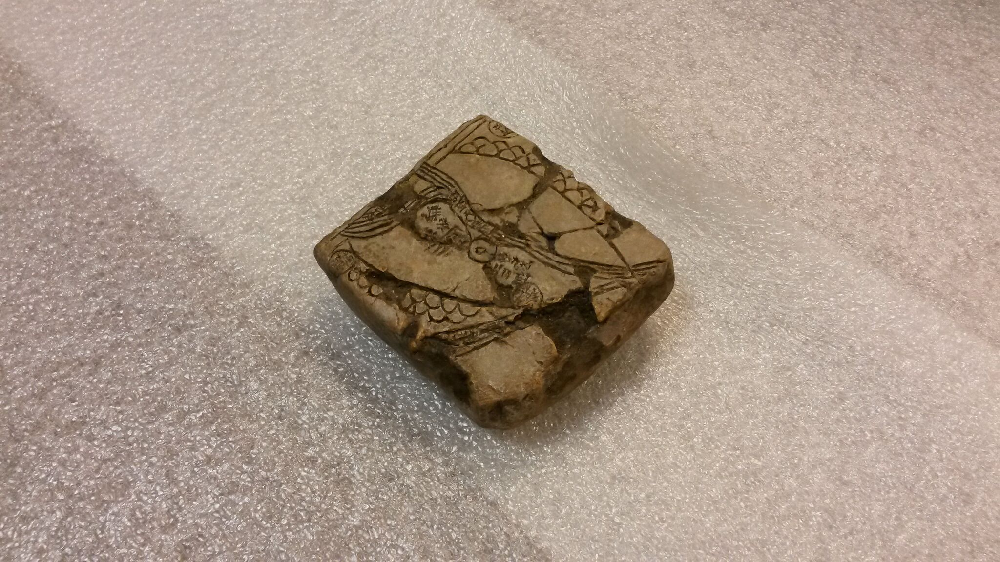
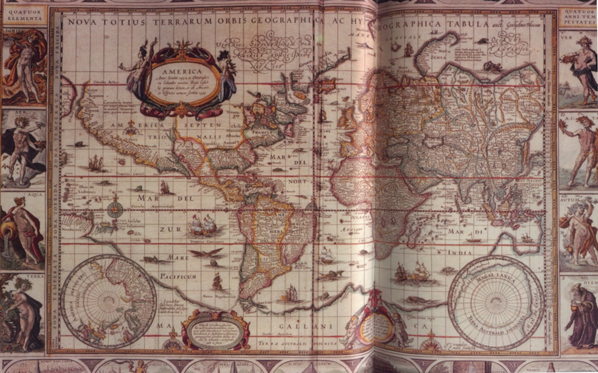

"Life as a Modern Day Cartographer"
Redefining Cartography for the 21st Century
GISSO Career Fair 2017
Hi! I'm Mike. I make maps.
I am a biker, sailor, and skier... and also
a cartographer, data specialist, geographer,
urban technologist, and educator.
GIS/Data Visualization Specialist and Instructor
MIT Department of Urban Studies and Planning
mjfoster@mit.edu | @mjfoster83
Utilize data, maps, and technology to make our cities, and world, a better place to live.
Big Data
Data Visualization
Infographics
Smart Data
Data Science
Where does Cartography fit into all of this?
Image: The Feltron Report
Redefining Cartography for the 21st Century
"The making and study of maps in all their aspects"
Robinson, et al. "The Elements of Cartography, 6th Ed." 1995The technologies around making maps are dynamic and changing, but cartography transcends centuries...

Ancient Middle Eastern Property Map, Harvard Libraries Collection, circa 4500 BCE

Ptolemaic World, Schnitzer (1482)

World Map, Mercator (1569)

Cholera Outbreak of 1854, John Snow, 1854

London Underground, Henry Beck, 1933


Magellan sailing the open seas
Jodocus Hondius, 1635
What does Cartography really look like in the 21st century?


"A New Map of America", NYTimes, Joel Kotkin, Clare Trainor, 2016

These maps represent our knowledge of the modern world in the same way the maps of old represented knowledge of the world at that time.
These maps - are no less important and relevant than the grand maps of old.
Defining Cartography
Distill stories out of highly complex systems
Identify Patterns Otherwise Hidden in Data
Communicate truths and realities about the world
"Digital Matatus", Sarah Williams/Wenfei Xu (Civic Data Design Lab), 2014On Large Scales

"The peaks and valleys of Trump and Clinton’s support", Washington Post, 2016
And Small scales
“Of all aspects of cartography, map design is perhaps the most complex”
- Arthur Robinson
Skilled modern Cartographers
...not only have mastered the principles of mapmaking, but also have a firm grasp of their environment, understand the cognitive processes of thought and communication, and familiarity with other mapping sciences, including geodesy, surveying, photogrammetry, remote sensing, and GIS.
"Mapping Segregation", NYTimes (Bloch, Cox, & Giratikanon), 2015Bottom Line: Cartography is Communication
"Firefly Cartography", John Nelson, 2016utilizing spatial means and tools
Modern Cartographer
Data Analyst
Writer
Story Teller
Statistician
Designer
Programmer
GIS Specialist
Algorithmic Developer
Database Administrator
UIUX Expert
Subject Matter Expert
Modern cartography constitutes many theoretical and practical foundations of geographic information systems.
I challenge you however, to think outside the GIS
"Trump's America", Tim Wallace (NYTimes), 2016Learn how to work with and communicate spatial data in meaningful ways... that impact decision making and inform your readers.
"Rebuild by Design", Sarah Williams/Mike Foster (Civic Data Design Lab), 2013When making a map:
- Why are you making the decisions you are making?
- What are the precedents for those decisions?
- How could the options for display be improved?
- Why would the new option be an improvement?
What has been done
"Thematic Mapping", Ken Field, 2016Why would the new option be an improvement?
"Thematic Mapping", Ken Field, 2016Construct Clear Hierarchy
"Beyond the Sea", Andy Woodruff, 2016Simplicity is Important
"Noise Complaints", Karl Sluis, 2012Exercise your Visual Expertise

- Always be learning
- Experiment and create
- Create and publish
- Get involved